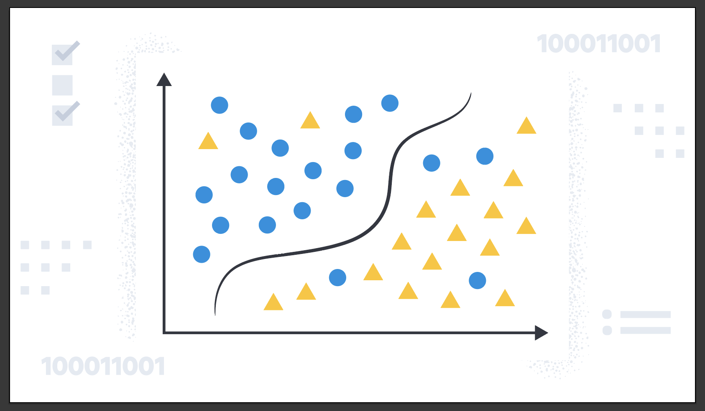

Python Portfolio
Welcome to my portfolio of Python projects, where data science, machine learning, and algorithmic efficiency intersect to address a diverse array of challenges. This collection demonstrates my expertise in applying advanced analytical techniques and leveraging Python’s extensive libraries to solve real-world problems. Each project reflects a blend of rigorous theoretical foundations and practical implementations. Don't hesitate to ask me about any of the below, I'm contactable at My LinkedIn, or my email sheehanconor67@gmail.com
I'm currently in Australia on a 417 Working Visa seeking employment, see the below button for my resumé, or if you've time to spare, my MSc on Machine Learning applied to Manufacturing Data.
Each project in this portfolio is a testament to my ability to harness the power of Python for data analysis, machine learning, and algorithmic problem-solving. Through these works, I aim to demonstrate not only my technical skills but also my passion for leveraging technology to gain meaningful insights and drive innovation.
This project employs Random Forest Regression and statistical analysis to predict the NBA's Most Valuable Player (MVP) and Most Improved Player (MIP) awards. By analyzing MVP Share voting distributions and player data from the past decade, it provides insights into the factors influencing player performance and recognition.
Focusing on the 3D printing process of Ti-6Al-4V for medical components, this project utilizes the Generalized Extreme Studentized Deviate (GESD) algorithm to detect statistical anomalies in in-process data, aiming to improve the quality and reliability of additive manufacturing.
This project implements Gaussian Mixture Model (GMM) clustering to analyze porosity in 3D printed Titanium components. By examining the morphology of porosity with varying gas flow rates, it provides a deeper understanding of the material properties and manufacturing process.
In this project we implement a series of different recursive solutions for various mathematical problems, analyse their runtime and memory complexity and discuss. This project involves both C++ & Python.

This repository is a simple implementation of a 'Sparse' class in both C++ & Python. It contains objects created to represent Sparse Matrices, and functions to add them.
Using Convolutional Neural Networks (CNNs), this project classifies microscopy images into different pore classes. It evaluates the model’s performance and analyzes misclassifications using a confusion matrix, showcasing the effectiveness of deep learning in image analysis.

This project compares the performance of eight parameter-optimized classification algorithms on a manually labeled set of 1000 ImageJ pore samples. The best-performing model is applied to a larger dataset to assess pore distribution across different gas flows.
In this project, I developed a web scraper to extract the top 10 headlines in Sports, Entertainment, and Politics from the JOE.ie website, saving the data to a local SQL database. It demonstrates web scraping, data extraction, and database management skills.
Leveraging the Pwned Passwords API, this project checks if a password has been compromised in any data breaches. It uses SHA1 hashing and API requests to enhance cybersecurity measures.

This project applies Dijkstra's algorithm and Prim's method to calculate the shortest distance and minimum spanning tree for visiting 12 pubs in Youghal, demonstrating expertise in pathfinding and network optimization.

Implementing various sorting algorithms (Bubble Sort, Merge Sort, Selection Sort, Insertion Sort, Quick Sort, Heap Sort) and data structures (Binary Trees, Hash Tables, Stacks, Queues, Linked Lists), this project explores their functionalities and runtime complexities, emphasizing algorithmic efficiency and data organization.

This project delves into string searching algorithms, dynamic programming solutions for the Knapsack Problem and Longest Common Subsequence, and multithreaded matrix multiplication. It applies these techniques to analyze the Chernobyl Miniseries transcript and optimize computational tasks.